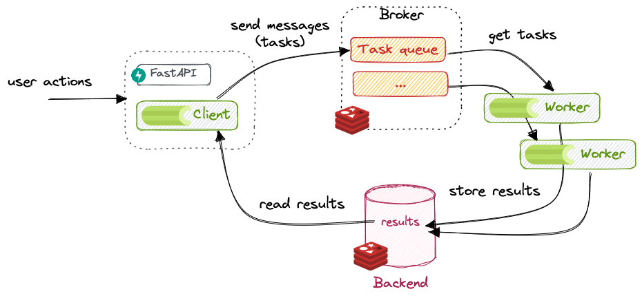
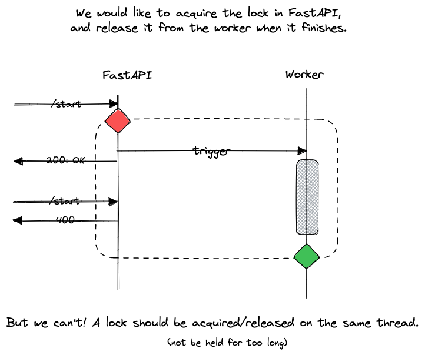
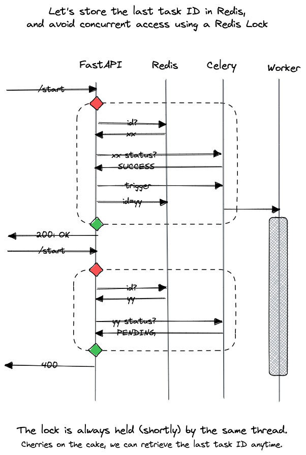

Celery¶
Celery is a task queue with focus on real-time processing, while also supporting task scheduling.
What is Celery¶
From their documentation:
Task queues are used as a mechanism to distribute work across threads or machines. A task queue’s input is a unit of work called a task. Dedicated worker processes constantly monitor task queues for new work to perform.
Celery communicates via messages, usually using a broker to mediate between clients and workers. To initiate a task the client adds a message to the queue, the broker then delivers that message to a worker.
A Celery system can consist of multiple workers and brokers, giving way to high availability and horizontal scaling. [it] is written in Python, but the protocol can be implemented in any language [(current clients in NodeJS, PHP)].

In other words, the entities involved in Celery are:
- producers: also called clients, they are the ones requesting tasks and doing something with the results.
- broker: the broker is the message transport, used to send and receive messages between producers and workers. In other words, they store the task queue. Celery supports a myriad of message brokers, but currently only two are feature-complete: Redis and RabbitMQ.
- workers: the workers are processes that constantly watch the task queue and execute tasks.
- result backend: a backend is only necessary when we want to keep track of the tasks' states or retrieve results from tasks. A result backend is optional but turned on by default, see Celery without a Results Backend.
See also the diagram in Understanding Celery's architecture
Getting started¶
Launch a broker/backend¶
First, we need a broker and a backend. We will use Redis, as it is both full-featured and easy to use:
poetry add 'celery[redis]'
We can run Redis locally using:
docker run --rm --name some-redis -p 6379:6379 redis:latest
Tip
To see what happens exactly inside Redis, download and run a Redis GUI such as Another Redis Desktop Manager.
Create a task¶
Now, let's create a task. We first need to create a Celery instance, which is the entrypoint to Celery: may it be submitting tasks (client), managing workers, getting results, etc. We usually call it the Celery application, or app for short.
from celery.app import Celery
redis_url = os.getenv("REDIS_URL", "redis://localhost:6379")
celery_app = Celery(__name__, broker=redis_url, backend=redis_url)
Now, let's define a dummy task, that will create a file with a timestamp:
# in file task.py
from celery.app import Celery
from datetime import datetime
import os
redis_url = os.getenv("REDIS_URL", "redis://localhost:6379")
app = Celery(__name__, broker=redis_url, backend=redis_url)
@app.task
def dummy_task():
folder = "/tmp/celery"
os.makedirs(folder, exist_ok=True)
now = datetime.now().strftime("%Y-%m-%dT%H:%M:%s")
with open(f"{folder}/task-{now}.txt", "w") as f:
f.write("hello!")
To check it works, let's call it directly using the Python REPL (python):
>>> from fastapi_celery import task
>>> task.dummy_task()
delay(), which is a shortcut to apply_async(). Those methods will return
an AsyncResult, that can be further used to query the status.
>>> t = task.dummy_task.delay()
>>> t.status
PENDING
Why is it pending? Well, we didn't launch any workers, did we? Let's change that.
Launch a worker¶
In another terminal, run:
celery --app=fastapi_celery.task.app worker --concurrency=1 --loglevel=DEBUG
Now, try again:
>>> t.status
SUCCESS
To ensure this works, try adding a delay in the task: time.sleep(10).
Don't forget to restart the worker, as the method definition changed!
Even better, use watchdog to automatically restart the worker:
poetry add watchdog --group=dev
watchmedo auto-restart --directory=./fastapi_celery --pattern=task.py -- celery --app=fastapi_celery.task.app worker --concurrency=1 --loglevel=DEBUG
Parameters and return values¶
Now, let's change a bit our dummy task so it receives an argument and returns a result:
def dummy_task(name='Bob') -> str:
sleep(5)
return f'Hello {name}!'
>>> import importlib
>>> importlib.reload(task)
>>> t = task.dummy_task.delay('Lucy')
>>> t.result # empty until success
>>> t.result
'Hello Lucy!'
Try to return a dictionary instead. It should work the same. But what about this?
def dummy_task() -> str:
return open('/tmp/celery/x.txt', 'w')
>>> t = task.dummy_task.delay()
>>> t.status
'FAILURE'
>>> t.result
EncodeError("TypeError('Object of type TextIOWrapper is not JSON serializable')")
t.successful()
False
So beware: results must be JSON-serializable (or match the serialization configured in Celery) since the results will be serialized and stored in the results backend.
Using Celery with FastAPI¶
With those building blocks, we can now bind the two together. We simply import task.py in FastAPI,
and call our task.delay() from a REST call. We can return the task ID and its status to the user:
from fastapi import FastAPI, HTTPException
from pydantic import BaseModel
from celery.result import AsyncResult
from . import task
app = FastAPI()
class TaskOut(BaseModel):
id: str
status: str
@app.get("/start")
def start() -> TaskOut:
r = task.dummy_task.delay()
return _to_task_out(r)
@app.get("/status")
def status(task_id: str) -> TaskOut:
r = task.app.AsyncResult(task_id)
return _to_task_out(r)
def _to_task_out(r: AsyncResult) -> TaskOut:
return TaskOut(id=r.task_id, status=r.status)
Restricting to one task at a time¶
Celery doesn't provide an obvious way to limit the number of concurrent tasks. In our use case, we want to have only one task executed at a time. If the user tries to start a task while another is already running, he should get an error.
With multithreading/multiprocessing, a common construct is the mutual exclusion (mutex) lock. The thing is, we have multiple processes here, so we need a lock that lives outside the Python process.
As we already have Redis, we can use a Redis Lock! But how do we use it?
Ideally, we would like to get the lock when we start a task (from the REST endpoint - FastAPI), and release it when the task is finished (from the Celery worker). But a lock should be acquired and released from the same thread... And worse, if our worker fails to release the lock, we are stuck!

A better way is to use the lock from FastAPI only. We cannot know when the task is finished, but we can query
the state of a task given an ID. So let's use the lock to secure the read/write to a Redis key, current_task_id,
which holds the ID of the last task!

So, for the implementation, let's first create a redis lock:
from redis import Redis
from redis.lock import Lock as RedisLock
redis_instance = Redis.from_url(task.redis_url)
lock = RedisLock(redis_instance, name="task_id")
REDIS_TASK_KEY = "current_task"
The /start endpoint now looks like this:
@app.get("/start")
def start() -> TaskOut:
try:
if not lock.acquire(blocking_timeout=4):
raise HTTPException(status_code=500, detail="Could not acquire lock")
task_id = redis_instance.get(REDIS_TASK_KEY)
if task_id is None or task.app.AsyncResult(task_id).ready():
# no task was ever run, or the last task finished already
r = task.dummy_task.delay()
redis_instance.set(REDIS_TASK_KEY, r.task_id)
return _to_task_out(r)
else:
# the last task is still running!
raise HTTPException(
status_code=400, detail="A task is already being executed"
)
finally:
lock.release()
And for the /status, we can now make the task_id query parameter optional:
@app.get("/status")
def status(task_id: str = None) -> TaskOut:
task_id = task_id or redis_instance.get(REDIS_TASK_KEY)
if task_id is None:
raise HTTPException(
status_code=400, detail=f"Could not determine task {task_id}"
)
r = task.app.AsyncResult(task_id)
return _to_task_out(r)
Note
This code is far from perfect. For example: what happens if the task_id is incorrect or
not known by celery? For /status, we may just get an error. But for /start?
The lock may never be released! This is one of many flows, so don't put it in production
Canceling long-running tasks¶
Maybe we want to cancel the current task. How can we do it?
The Celery app gives us access to control, which lets us get statistics, how many workers are running, etc.
from . import task
# note: if id is read from redis, use:
# task_id = redis_instance.get(...).decode('utf-8')
task.app.control.revoke(task_id, terminate=True, signal="SIGKILL")
Returning results and exceptions¶
Simply add a new property to TaskOut:
class TaskOut(BaseModel):
id: str
status: str
result: str | None = None
And modify _to_task_out like this:
def _to_task_out(r: AsyncResult) -> TaskOut:
return TaskOut(
id=r.task_id,
status=r.status,
result=r.traceback if r.failed() else r.result,
)
You can try to get the traceback by making the task throw an exception or return a value, and then calling:
curl http://localhost:8000/start
curl http://localhost:8000/status | jq -r '.result'